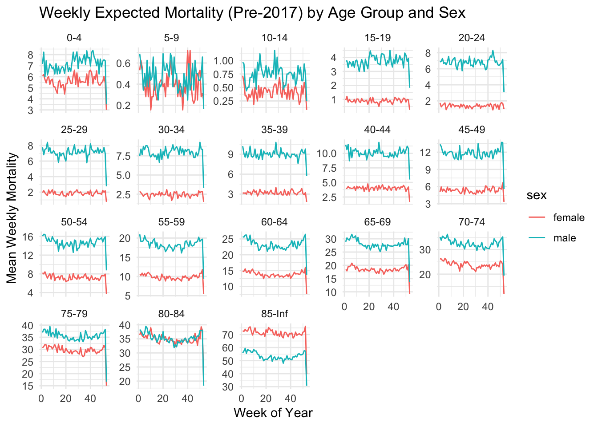

`summarise()` has grouped output by 'agegroup'. You can override using the
`.groups` argument.
print(population_summary)
# A tibble: 36 × 3
# Groups: agegroup [18]
agegroup sex mean_population
<fct> <chr> <dbl>
1 0-4 female 118887.
2 0-4 male 124167.
3 5-9 female 128338.
4 5-9 male 134028.
5 10-14 female 137254.
6 10-14 male 142835.
7 15-19 female 140546.
8 15-19 male 145330.
9 20-24 female 136901.
10 20-24 male 135803.
# ℹ 26 more rows
ggplot(population_summary, aes(x = agegroup, y = mean_population, fill = sex)) +geom_bar(stat ="identity", position ="dodge") +labs(title ="Average Population Size by Age Group and Sex",x ="Age Group", y ="Average Population Size") +theme_minimal()
In the younger age group, under 14 years, male has higher proportion than female. This might be because of the notion that some of the family willingly prefer having boy baby than girl. Besides, the sex ratio at born is around 105-107 boys versus 100 girls globally.
In the working age group, 20-49, female has higher proportion than male. This might be because male moving out for work or moving out for immigration. During the elder group, the proportion of female is still higher than that of male. This might be because the average age of female is higher than that of male.
Task 2
Estimate expected mortality and a standard deviation for each week
pre_2017_data <- puerto_rico_counts |>filter(date <as.Date("2017-01-01")) |>mutate(year =year(date),week_of_year =isoweek(date) # or week(date), but isoweek aligns ISO weeks )# Compute weekly mortality per agegroup, sex, and week_of_year, aggregated by year# sum over all days within each week_of_year-year combinationweekly_data <- pre_2017_data |>group_by(year, week_of_year, agegroup, sex) |>summarise(weekly_outcome =sum(outcome), .groups ='drop')# calculate the mean and SD of mortality per week_of_year, agegroup, and sex, # using all pre-2017 years as a baseline.baseline_stats <- weekly_data |>group_by(agegroup, sex, week_of_year) |>summarise(mean_outcome =mean(weekly_outcome, na.rm =TRUE),sd_outcome =sd(weekly_outcome, na.rm =TRUE),.groups ='drop' )print("Baseline Weekly Statistics (Pre-2017):")
# Plotting a few selected age groups to show variationggplot(baseline_stats, aes(x = week_of_year, y = mean_outcome, color = sex)) +geom_line() +facet_wrap(~ agegroup, scales ="free_y") +labs(title ="Weekly Expected Mortality (Pre-2017) by Age Group and Sex",x ="Week of Year",y ="Mean Weekly Mortality" ) +theme_minimal()

Combine data into bigger age groups
# combining age groups:# - Combine (0-4, 5-9, 10-14) into "0-14"# - Combine (15-19,20-24,25-29,30-34,35-39) into "15-39"# - Combine (40-44,45-49,50-54,55-59) into "40-59"# - Combine (60-64,65-69,70-74) into "60-74"# - Combine (75-79,80-84,85-Inf) into "75+"combined_data <- pre_2017_data |>mutate(combined_agegroup =case_when( agegroup %in%c("0-4", "5-9", "10-14") ~"0-14", agegroup %in%c("15-19", "20-24", "25-29", "30-34", "35-39") ~"15-39", agegroup %in%c("40-44", "45-49", "50-54", "55-59") ~"40-59", agegroup %in%c("60-64", "65-69", "70-74") ~"60-74", agegroup %in%c("75-79", "80-84", "85-Inf") ~"75+",TRUE~ agegroup # If any leftover group, keep as is ))# Aggregate daily data to weekly mortality by combined_agegroup, sex, year, and week_of_yearweekly_data_combined <- combined_data |>group_by(year, week_of_year, combined_agegroup, sex) |>summarise(weekly_outcome =sum(outcome), .groups ='drop')# Compute baseline means and sds per week_of_year, agegroup, sexbaseline_stats_combined <- weekly_data_combined |>group_by(combined_agegroup, sex, week_of_year) |>summarise(mean_outcome =mean(weekly_outcome, na.rm =TRUE),sd_outcome =sd(weekly_outcome, na.rm =TRUE),.groups ='drop' )print("Baseline Weekly Statistics With Combined Age Groups:")
[1] "Baseline Weekly Statistics With Combined Age Groups:"
# Plot the combined groupsggplot(baseline_stats_combined, aes(x = week_of_year, y = mean_outcome, color = sex)) +geom_line() +facet_wrap(~ combined_agegroup, scales ="fixed") +labs(title ="Weekly Expected Mortality (Pre-2017) by Combined Age Groups and Sex",x ="Week of Year",y ="Mean Weekly Mortality" ) +theme_minimal()